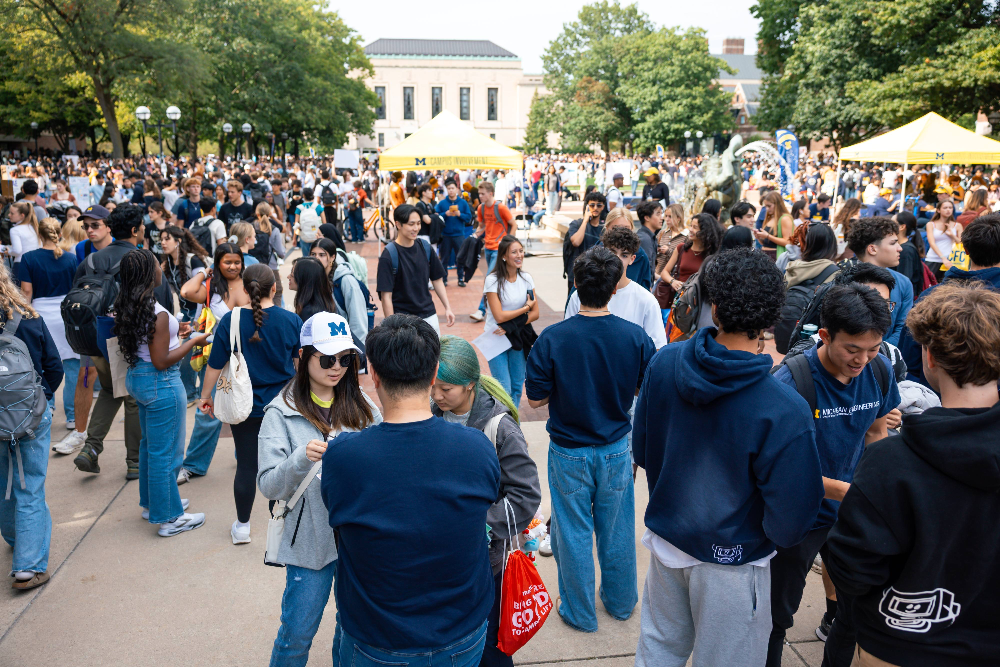
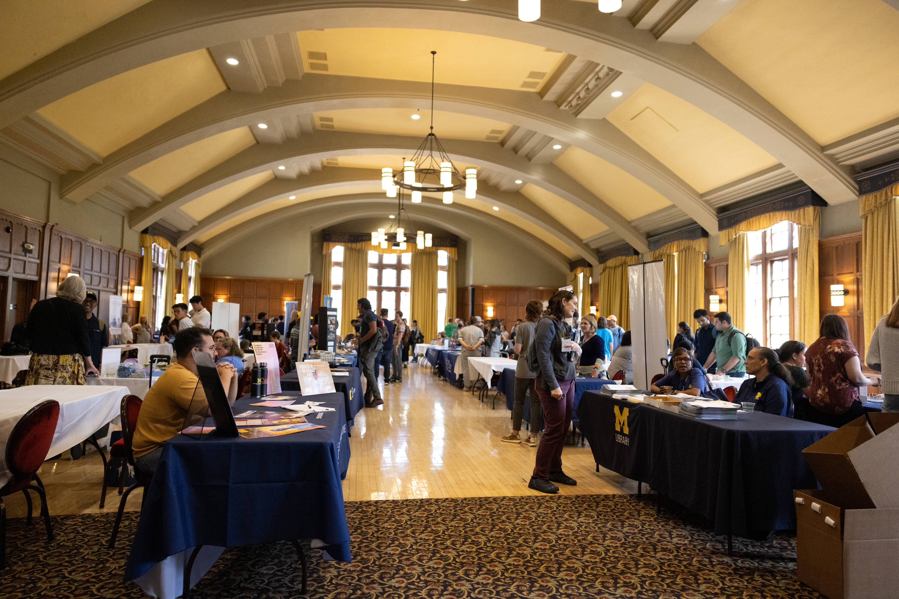

It's the best time for making connections
Find Alumni
Try to start building up connections through school's network? The UMSI career Development Resource Hub offers tools and guidance for connecting with alumni and other professionals.
Other networking
- Friends and peers
- Faculty, supervisors, mentors
- LinkedIn search
Attend a career event
Participation in the upcoming career event offers a valuable opportunity to engage with industry professionals, explore a wide range of career paths, and gain practical insights beyond academic learning. Join in the CareerLink to explore more information.
Outreach Messages
After establishing a few meaningful connections within your target companies, consider reaching out directly to your top-choice employers via email. Use this opportunity to express your genuine interest in their organization, inquire about potential openings, and highlight your enthusiasm for contributing to their team. A thoughtful, personalized message can help you stand out and potentially lead to an interview opportunity, even if a position hasn't been publicly advertised.
- Start with a resume: You can find intructions in Resume
- Request for meeting emails: You can find templates in Networking email templates
- Learn more languages for communication: Use the tool lettersmith
Prepare an interview
Taking time to research the company, review common interview questions, and practice clear, confident responses can significantly boost performance and confidence. A well-prepared candidate demonstrates professionalism, enthusiasm, and a genuine interest in the role—all key qualities that employers value. Please use the CDO's Pre Interview Worksheet form help you prepare for more steps in the future.